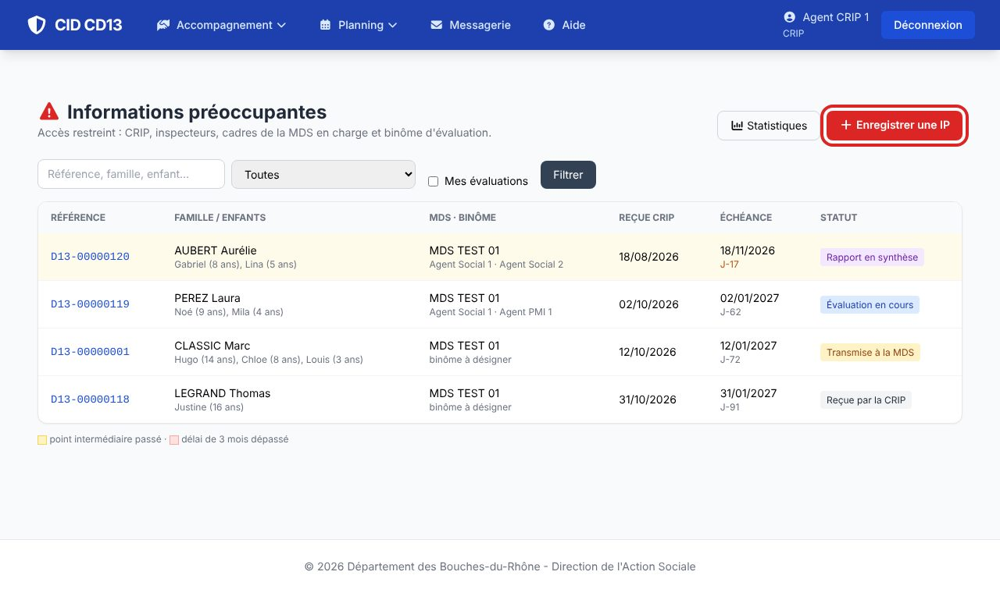
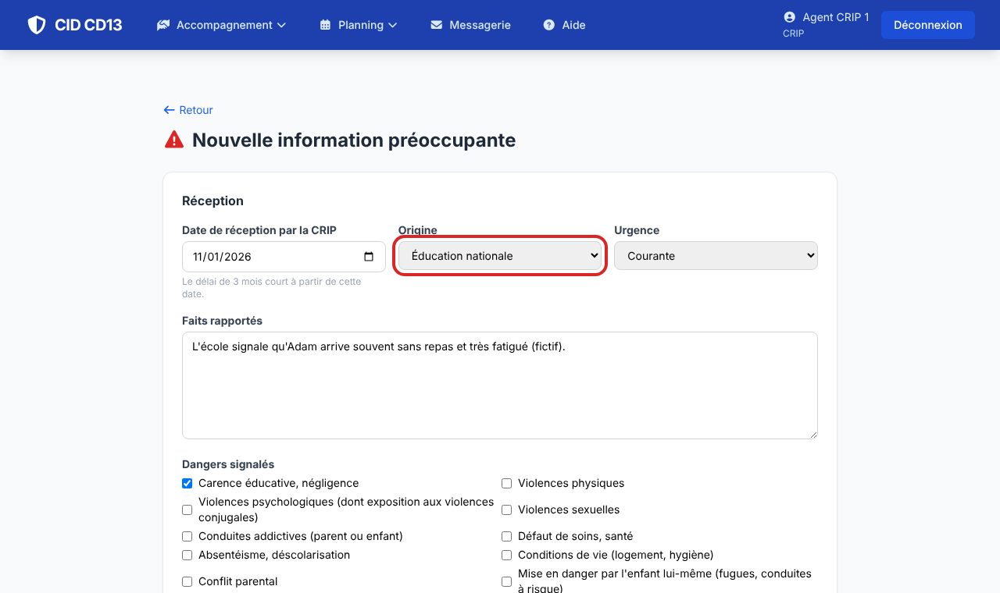
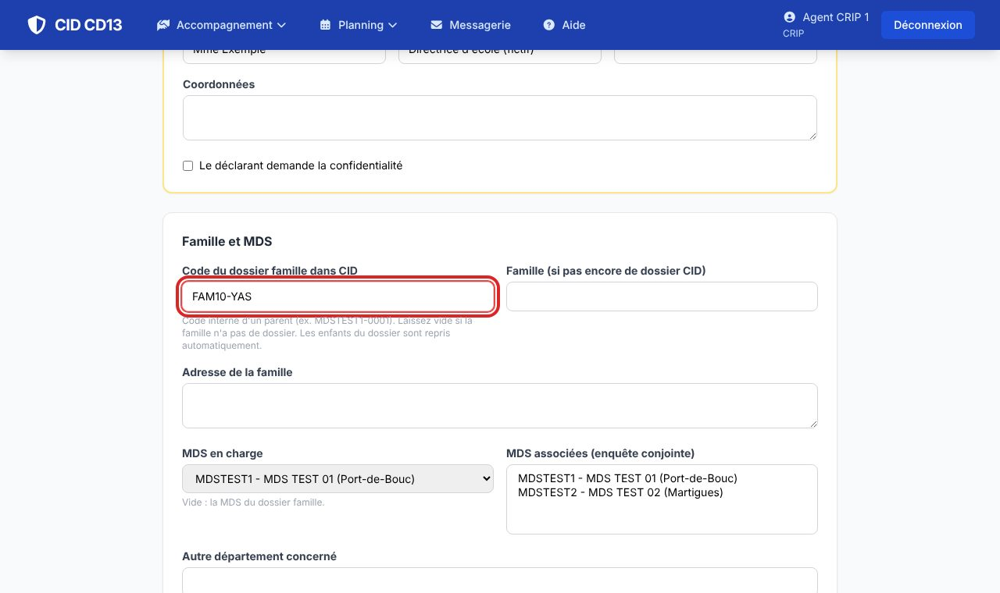
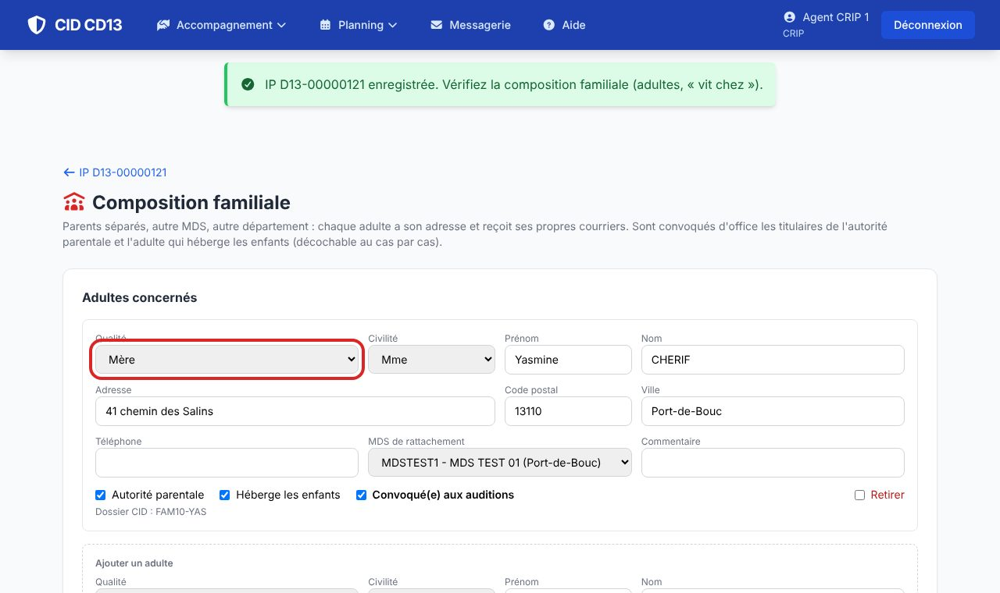
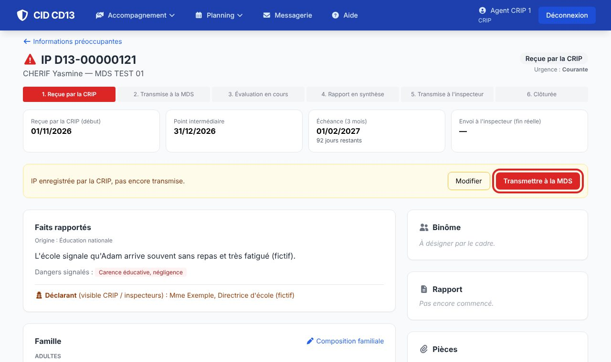
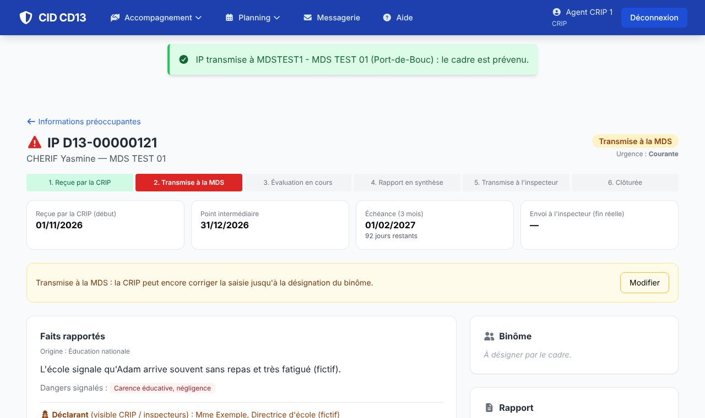

1Ouvrir une nouvelle IP

- Ouvrez la liste des informations préoccupantes et cliquez sur Enregistrer une IP.
- La liste se filtre par statut ; les IP dont le point intermédiaire est passé sont en orange, celles qui ont dépassé 3 mois en rouge.
2Décrire l'information reçue


- Réception : la date de réception par la CRIP (le délai de 3 mois court à partir de cette date), l'origine et le niveau d'urgence.
- Faits rapportés et dangers signalés ; une situation particulière (grossesse, handicap…) conduira CID à proposer un professionnel de PMI dans le binôme.
- Déclarant : nom, qualité, structure, coordonnées, confidentialité demandée.
- Famille : saisissez le code du dossier famille dans CID (les enfants sont repris automatiquement) ; sinon le nom et l'adresse de la famille. Choisissez la MDS en charge (et les MDS associées en cas d'enquête conjointe).
- Enregistrez.
Le déclarant n'apparaît jamais à la MDS, ni dans les courriers, ni dans le rapport.
3Vérifier la composition familiale

- CID ouvre la composition familiale : pour chaque adulte, sa qualité, son adresse, sa MDS, l'autorité parentale et s'il héberge les enfants.
- Les titulaires de l'autorité parentale et l'adulte qui héberge les enfants sont convoqués d'office (décochable). Parents séparés, autre MDS, autre département : chacun reçoit ses propres courriers.
- Indiquez chez qui vivent les enfants : leur convocation sera adressée à cet adulte.
4Transmettre à la MDS


- Sur l'IP, cliquez sur Transmettre à la MDS : le cadre de la MDS reçoit un message CID.
- La CRIP peut encore corriger la saisie (Modifier) jusqu'à la désignation du binôme.
Bon à savoir
- L'évaluation dure 3 mois à compter de la réception par la CRIP, avec un point intermédiaire : les dates s'affichent en haut de l'IP, et CID envoie des rappels au cadre.
- Une IP n'est visible que par la CRIP, les inspecteurs, les cadres de la MDS en charge et le binôme d'évaluation. L'identité du déclarant n'est visible que par la CRIP et les inspecteurs.
Cliquez sur une image pour l'agrandir. Le cadre rouge montre où cliquer ou quoi remplir. Toutes les données affichées sont fictives.